Кунсткамера древесностружечной промышленности или ЛДСП неадекватность
 Когда я учился в 10м классе школы, то, что выполняло роль моего компьютерного стола понадобилось заменить чем-то более приличным. Неприличное же когда-то собрал мой дед в свойственной ему манере - из гуано и веточек, причём гуано было не высшего сорта, а веточки трещали под нагрузкой, грозя вернуться в исходное агрегатное состояние под названием "строительный мусор". Выглядело это соответственно и решительно не выдерживало ни критики, ни массы компьютерного железа, которая к тому моменту в моей комнате накопилась.
Когда я учился в 10м классе школы, то, что выполняло роль моего компьютерного стола понадобилось заменить чем-то более приличным. Неприличное же когда-то собрал мой дед в свойственной ему манере - из гуано и веточек, причём гуано было не высшего сорта, а веточки трещали под нагрузкой, грозя вернуться в исходное агрегатное состояние под названием "строительный мусор". Выглядело это соответственно и решительно не выдерживало ни критики, ни массы компьютерного железа, которая к тому моменту в моей комнате накопилась.
На дворе стоял линолеум миллениум, мы ходили с мамой по конторам, занимающимся продажей мебели, и искали подходящий экземпляр класса "компьютерный стол". Тогда я понял, что проектируют подобную мебель по всей видимости инопланетяне, выращенные в закрытых подземных лабораториях из пробирок каким-то злым гением. В силу своего ограниченного кругозора они не имели представления ни о том, что такое компьютер, ни о комфорте работы, ни об анатомии человека в целом.
В одном из компьютерных столов отделение под системник было сделано глухим, узким и закрытым с обеих сторон, то есть, боковые вентиляционные отверстия закрывались мдф наглухо, что отнюдь не способствовало цикруляции воздуха в системном блоке (привет тебе, AMD Athlon). В другом экземпляре ширина выкатной полки под клавиатуру была рассчитана только на клавиатуру (и то не самую мультимедийную), то есть, предпологалось, что я должен по 8-12 часов в сутки сидеть за этим столом таким образом, чтобы одна рука у меня лежала на клавиатуре на 10см ниже плоскости стола, а другая соответственно распологалась на 10см выше на мыши и периодически путешествовала на клавиатуру и обратно. В третьем была специальная подставка под монитор, которая была расположена существенно левее выкатной полки под мышь и клавиатуру, то есть, несколько часов в сутки мне пришлось бы сидеть с головой, повёрнутой градусов на 45 влево. В четвёртом столешница имела ширину чуть больше клавиатуры, правый локоть упирался в стойку для компакт дисков, левый свисал с поверхности стола сантиметров на 20. Работать за таким столом можно было только расположив локти на ширине плеч, но для того, чтобы это сделать, нужно было сидеть сантиметров на 10 выше, чем позволял любой стандартный стул. Гениальное решение! Далее было ещё множество вариантов, каждый из которых в той или иной мере делал работу с компьютером в лучшем случае достаточно некомфортной. Одним словом, перебрав около полутора десятков компьютерных столов, каковые нашлись в зоне досягаемости, я понял, что на инопланетян надежды нет и придётся решать проблемы своими силами.
Посидев несколько часов и воспользовавшишь кажется, KPovModeller из состава KDE2, я попытался спроектировать пару компьютерных столов, в которых с максимальным удобством можно было бы разместить достаточное количество системных блоков. Никакое количество в эпоху практического отсутствия виртуализации не казалось мне разумным: чем больше - тем лучше. Таким образом один гипотетический желаемый стол превратился в два практических. Как говорится, самая честная виртуализация - это несколько компьютеров и стул с колёсиками.
Казалось бы, что может стОящего сделать школьник? Сейчас я удивляюсь и понимаю, что время жизни этих столов на текущий момент составляет больше половины времени моей жизни. Конечно, сейчас я бы многое изменил, включая габариты, но тогда я и предположить не мог, что буду думать об этом спустя 18 лет. Ниже приведу пару фотографий, сделанных в 2008-м году, то есть уже через 8 лет после их создания.
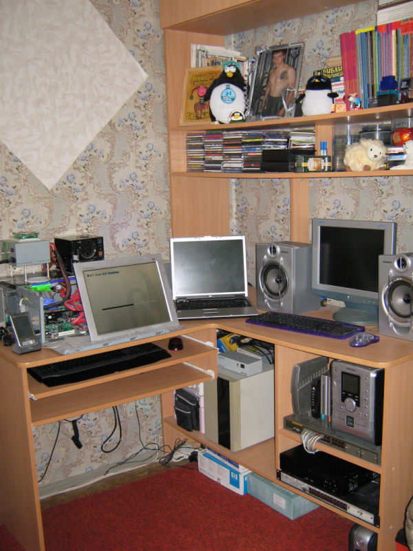
Начну пожалуй, снизу вверх - под столом оставлено пространство, в котором размещается UPS, куча коробок от техники, внутри которых лежат материнские платы и прочее железо, когда-то там же лежал жёсткий диск домашнего сервера, но впоследствии переехал в диван (об этом позднее). Далее, выше справа пара отделений, сделанных по ширине сетевого оборудования, что позволяет использовать их вместо серверной стойки. Там как раз лежат два коммутатора второго уровня. Снизу - резервный хардлинк, на следующей полке подключенный 24-х портовый D-Link. На хардлинке стоит резервный домашний MiniITX сервер, настроенный идентично основному на случай отказа. На длинке стоит музыкальный центр (подключенный к основному домашнему серверу), роутер Asus WL-500g Deluxe, прошитый DD-WRT, dlink коммутатор и ещё один роутер и VDSL модем от моторолла. Дальше к стене большое отделение, в котрое согласно плану можно поместить три системных блока с необходимыми просветами для вентиляции. Выше на столешнице есть место под ещё пару-тройку системных блоков или под ноутбук, системник и несколько мониторов. Слева две выкатных полки на расстоянии 10см друг над другом. Почему две? Потому что мышей с клавиатурами можно было позволить себе иметь больше, а монитор в те времена стоил достаточно дорого, особенно TFT, поэтому я когда-то спаял себе переключатель для монитора из двух советских П2K переключателей и SVGA кабелей. Получилось что-то вроде KVM свича только без K и M. На фото уже появился второй монитор, поэтому на второй полке жил то ноутбук, то сканер. А высота между полками в 10 см позволяла поставить туда кружку чая/кофе и задвинуть обратно (главное ложечку достать, иначе при достаточно высокой температуре чая можно незвнаЧАЙ разбудить соседей и родных задвинув выкатную полку). Ну и далее расположилась полка под компакт диски (я бы многое дал, чтобы отыскать часть из них сейчас, но они канули в лету), полка для компьютерных журналов и надо всем этим закрывающаяся полка под компьютерное железо (жёсткие диски, материнские платы и тому подобное.
Для тех, кто спросит, а что это за трёш распологается там за монитором, добавлю пару ночных фото:
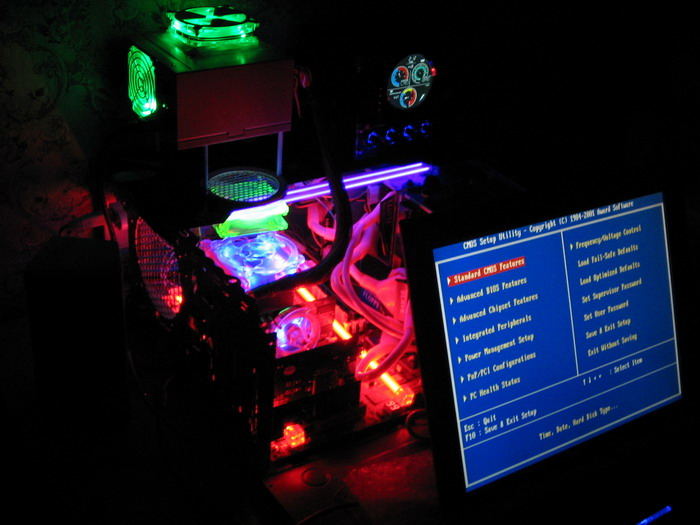
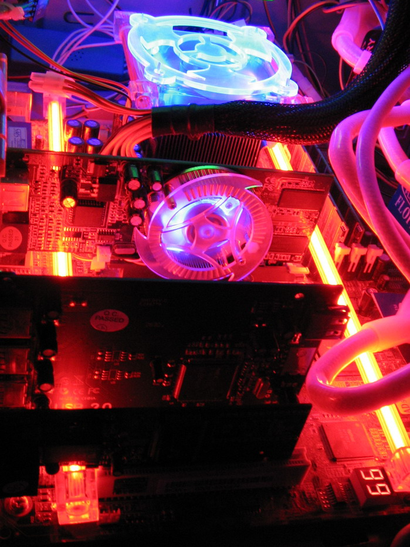
Шли лихие двухтысячные, мы развлекались как могли.
Компьютерный стол, стоящий в том углу комнаты переехал в мою квартиру в комнату жены и продолжает служить верой и правдой уже ей, а место компьютерных железок заняла косметика и бумаги. А теперь другой угол комнаты образца 2008го года:
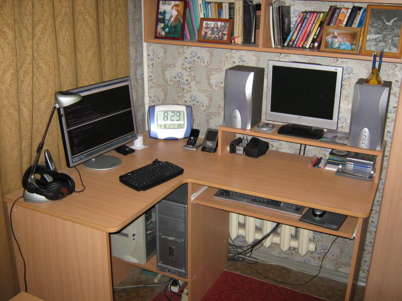
Тут всё просто и понятно - место ещё под пару системников, два монитора, надо всем этим полка для книг. Рядом стоял стул на колёсиках, что позволяло поворачиваться и работать с двумя компьютерами одновременно, причём вполне комфортно.
Однако моё счастье было бы не полным. Мама в шутку заявила мне, что если в моей комнате появится хоть ещё один системник, она меня выселит. Тогда я собрал домашний сервер в диване, на котором спал. Менять вообще ничего не пришлось, отверстия шириной в 10см на задней стороне дивана вполне хватило для нормального теплообмена, и для того, чтобы вывести все нужные провода наружу. Штатный радиатор был заменён на радиатор бОльшей рассеивающей площади, кулер - на более тихий, обороты снижены, блок питания тоже был выбран самый тихий. На жёсткий диск сверху на термопасту так же был поставлен дополнительный радиатор. Сервер был тише воды, ниже травы, поэтому о его существовании несколько месяцев вообще никто не знал кроме меня.
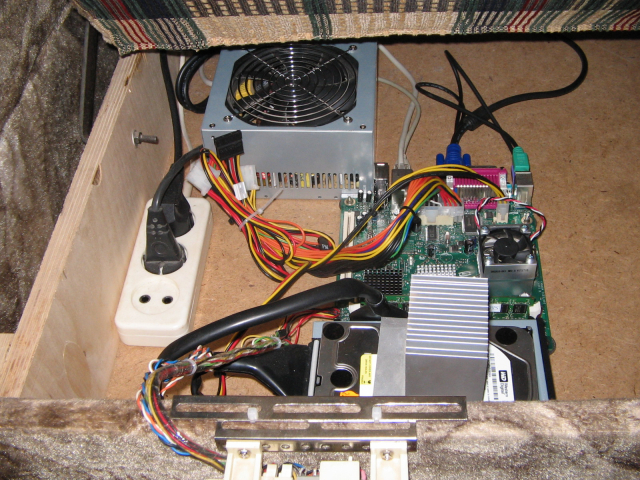
На краю дивана под бахромой скрывалась панель, снятая с 80286-го системника белой сборки, найденного в компьютерной комиссионке. Панель и крепление пришлось немного доработать.
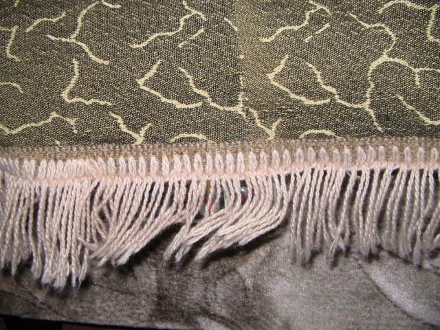
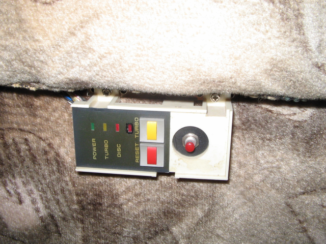
Только подумайте - компьютерные столы, изначально созданные для расположения в них системного блока, монитора и прочего, оказались намного менее подходящими для своего непосредственного назначения, нежели диван для того, чтобы расположить внутри него сервер! Интереса ради пробежался по сайтам, занимающимся мебелью, должен признать, за 18 лет ситуация изменилась в лучшую сторону и те выкидыши инженерной мысли, которые раньше мне встречались под видом компьютерных столов я вижу разве что на авито, но всё-равно, если мне в будущем ещё понадобится разместить где-то системный блок, я лучше потрачу большее количество денег и получу именно то, что мне нужно, с нужным количеством и расположением полок нужного мне размера, с учётом планировки комнаты и размещения мебели, учётом своих прошлых и множества чужих ошибок. Тем более, появилось множество информации - каналы на ютубе, где детально всё показано, группы в контакте, форумы и многое, многое другое. Да и контор, в которых можно заказать распил ЛДСП по вашим чертежам. Я даже ссылки приводить не буду, гугл легко сделает это за меня по запросу "делаем мебель своими руками". Просто выйдите за рамки того, что вам пытаются впарить предлагают и подумайте - а не могли бы вы сами сделать лучше? Мебель - это очень подходящая сфера для того, чтобы получить новый опыт. Сфера несложная, доступная и способная в какой-то мере повысить комфорт вашей жизни на многие годы вперёд. Главное не забывать принцип "семь раз отмерь, один раз отрежь" в процессе проектирования.
Вообще, сделать себе рабочее место для неких целей, например, для своего хобби, действительно можно из тех вещей, которые для этого не были предназначены изначально. Например, дешёвый стеллаж из касторамы оказался очень удобен. На металлические поверхности с помощью магнитов пожно повесить множество инструмента, таким образом задействуется не только горизонтальная плоскость, используемая как стол, но и вся нижняя поверхность горизонтальной плоскости над ней. Боковую сторону слева я использовал для размещения нескольких полочек под мелочи, просто отрезав и закрепив куски кабель-канала нужной длины, под плоскостью стола так же есть пара отрезков кабельканала, в которые защёлкиваются удлиннители на пять розеток. Боковая сторона справа содержит блок управляемых розеток (которые скоро будут выключать мне обе паяльных станции и подсветку, если меня давно не было рядом), лабораторный блок питания (расположен выше всё в том же кабель канале) и кусок сендвич панели, на которой размещены OrangePi PC, ардуино и мультиметр. OrangePi используется как замена системному блоку для программирования микроконтроллеров, все gpio выведены на беспаечную макетную плату, приклеенную к той же сендвич панели, рядом выходы с лабораторника. Отверстия в перфорированных уголках, являющихся стойками стеллажа позволят вдальнейшем закрепить на них боковые панели из лдсп на мебельных петлях, что автоматически превратит стеллаж в некое аккуратное подобие шкафа, дабы он вписался в интерьер, пока всё закрыто занавеской. Пазы на длинных боковых панелях подошли для того, чтобы повесить монтажный провод для пайки и припой, а так же повесить несколько пластиковых органайзеров под радиодетали. Всё достаточно удобно. Так же две завалявшиеся направляющие и кусок пластикового подоконника слились в экстазе и идеально подошли к крепёжным отверстиям полки стеллажа, образовав отличную выкатную полку. Думаю, постепенно найдётся ещё масса решений, которые позволят ещё повысить удобство рабочего места для хобби.
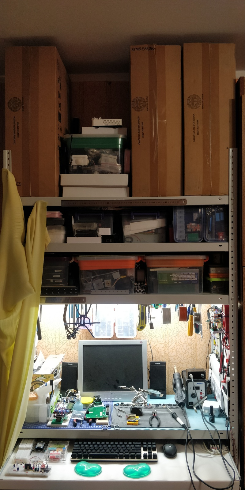
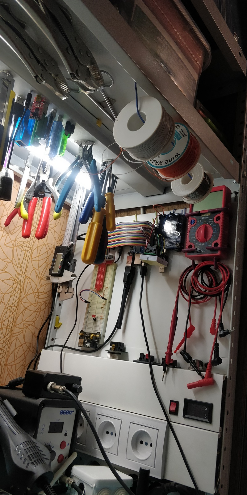
А теперь взгляд в будущее. Вернёмся к работе за компьютером. Когда я работаю из дома, я чаще всего делаю это полусидя-полулёжа на диване, подкладывая диванные подушки под поясницу и колени, пришёл к этому эмпирическим путём и это оказалось наиболее удобным. Вполследствии я понял, что это положение примерно соответствует положению, которое занимает космонавт при старте ракеты, чтобы максимально равномерно распределить нагрузку на тело. То же положение вы занимаете в кресле стоматолога. Долго думал о реализации компьютерного полукресла-полустола, находил несколько подобных проектов в сети, в том числе краудфандинг проекты с дикими ценниками в десятки тысяч долларов. Последние очевидно были недоступны с финансовой точки зрения. Наибольший интерес для меня по-прежнему представляют самоделки. И вот, сегодня обнаружил пример реализации вот такого компьютерного дивана.
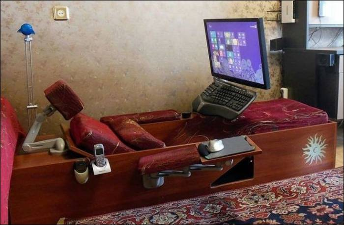
Пожалуй, он наиболее доступен для реализации, но пока решительно не представляю, где это можно разместить в моей небольшой квартире.
Ну и взгляд в будущее ещё подальше. Ещё один способ улучшить компьютерный стол - отказаться от него совсем. Максимум пространства на компьютерном столе традиционно занимает монитор, либо мониторы. Чем шире наши морды, тем теснее наши ряды! Чем больше диагональ наших мониторов, тем бОльшую площадь должен занимать компьютерный стол. Но что делать, если мы ограничены определённым объёмом жизненного пространства, в которое "стоматологическое кресло" компьютерной направленности никак не вписывается? С приемлимым уровнем комфорта разместить своё бренное тело можно и на диване, клавиатуру можно положить и на колени. Мышь в принципе для работы можно заменить тачпадом, интегрированным в клавиатуру. Для некоторых игр подойдёт и геймпад. А вот монитор я бы заменил каким-нибудь шлемом виртуальной реальности.
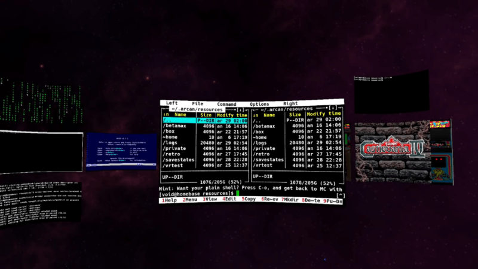
В этом случае мы получаем практически неограниченный объём, в котором можем перемещаться и этот объём можно заполнить нужным нам контентом, структутировав его так, как нам будет удобно. Проблема в том, что разумное качество изображения выдаёт разве что Oculus Rift, который имеет весьма ощутимую стоимость и предъявляет определённые требования к графической подсистеме компьютера, мне пока это недоступно. Китайские шлемы для телефонов я пробовал, один пылится на полке. При разрешении экрана телефона FHD или FHD+ пиксель получается с кулак размером и не позволяет комфортно работать с текстом в консоли даже при большом размере шрифта. Особенно мешают искажения, на периферии и посередине поля зрения, где пересекаются видимые области для левого и правого глаз. Насколько ситуацию спасает разрешение экрана телефона в 4К мне неизвестно, потому как такие телефоны мне пока тоже недоступны. В отношении софта всё представляется достаточно несложно. Создаём WindowsManager, который позволяет окна распологать не на плоскости, а в пространстве. Размести нужное количество "мониторов" желаемого размера в пространстве вокруг себя и пользуйся всё теми же приложениями, что и раньше. Думаю, можно даже написать какую-нибудь прослойку, которая с одной стороны будет обеспечивать отрисовку трёхмерного пространства, а с другой - эмулировать наличие в системе нескольких dummy-мониторовс различным разрешением и DPI. Это позволит запускать уже существующие WindowsManager'ы и приложения, у которых не будет нативной поддержки вышеописанной концепции. В steam уже два года как есть VirtualDesktop для Windows, выглядит впечатляюще, но для меня это бесполезно. Под Linux пока не нашёл ничего стоящего. Есть конечно Ibex, но оно пока кривое, страшное и заброшено 4 года назад. Жду чего-то нового. Если вы о таком знаете - подскажите, буду рад.
Теги: ностальгия, diy